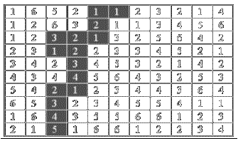

Numerical maze
Background
No one knows who is the creator of the first maze (or
labyrinth), but all sorts of mazes can be found almost everywhere and some of
them have been built long time ago. The most famous maze is maybe the one in
Crete, drawn and built by Daedalus for the king Minos, a place where it is
believed the Minotaur (a monster with the head of a bull and the body of a man)
was kept, feeding on human flesh, until destroyed by Theseus.
The following figure illustrates a kind of maze.

Figure
3.1 - The maze
Are you able to find a path that takes you from the start to
exit of the maze? You are only allowed to move horizontally or vertically
diagonal movements are not permitted. The path consists of subsequences obeying
to the following rule: 1; 1,2; 1,2,3; 1,2,3,4; and so on. Subsequences may
include changes of direction.
The problem you have to solve is to determine an entry
point and a path that takes you to the exit point, for a given maze. The start
point is always a cell in the top row of the maze (with the value 1!) and the
exit point is always a cell in the last line of the maze.
The input begins with a single positive integer on a line by itself indicating the number of the cases following, each of them as described below. This line is followed by a blank line, and there is also a blank line between two consecutive inputs.
The first input line contains two positive integers N and M for the number of rows and columns of the maze, respectively. Each of the N subsequent lines contains the M cell values, separated by single spaces. Cell values are greater or equal to 1.
OutputFor each test case, the output must follow the description below. The outputs of two consecutive cases will be separated by a blank line.
Two lines, the first with the coordinates, row and column, of the starting cell, and the second with the coordinates of the exit cell. If there are several solutions, print the one with lexicographically smallest starting point. If still a tie, print the one with lexicographically smallest ending point.
Sample Input
1
10 11
1 6 5 2 1 1 2 3 2 1 4
1 2 6 3 2 1 1 3 4 5 6
1 2 3 2 1 3 2 5 6 4 2
2 3 1 2 2 3 3 4 5 2 1
3 4 2 3 4 5 3 2 1 4 2
4 3 4 4 5 6 4 3 2 5 3
5 4 2 1 2 3 4 4 3 6 4
6 5 3 2 3 4 5 5 4 1 1
1 6 4 3 5 5 6 6 1 2 3
2 1 5 1 6 6 1 2 2 3 4
Sample Output
1 6
10 3